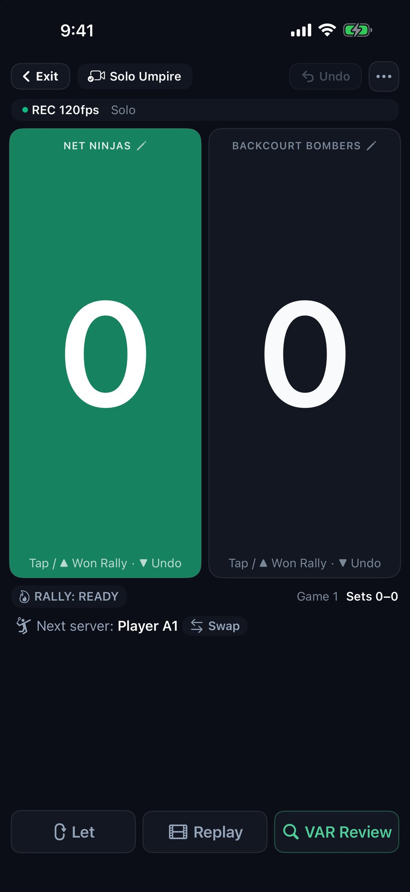
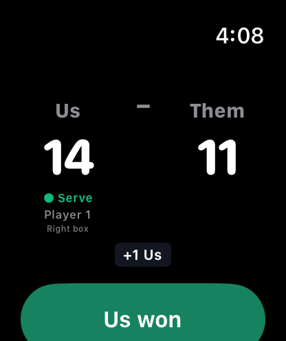
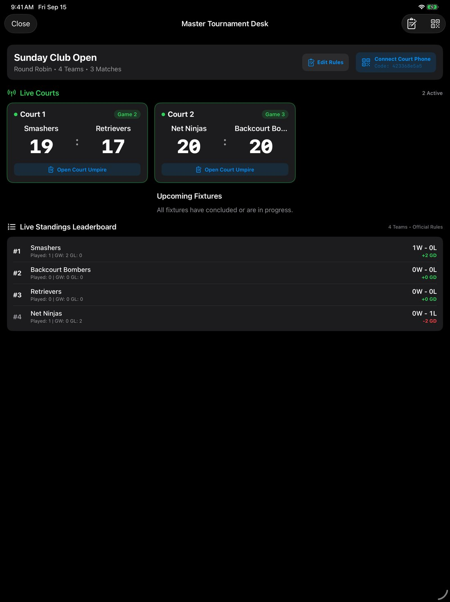
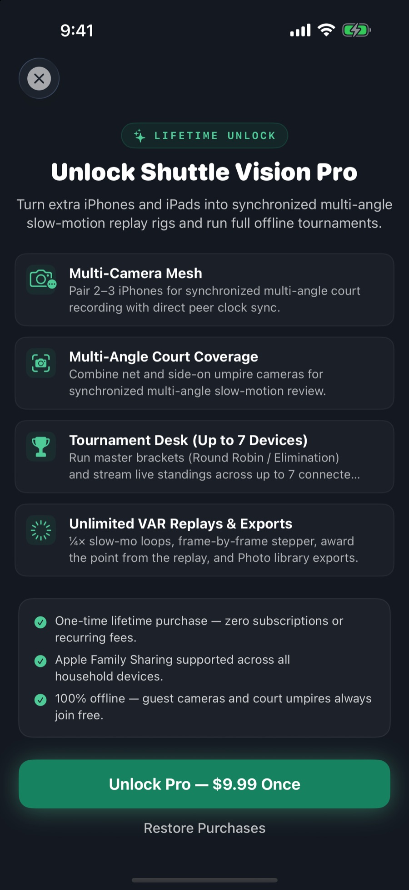

Shuttle Vision
Turn the iPhones and iPads you already own into a BWF badminton scoreboard, a multi-angle slow-motion replay system and a tournament desk — with an Apple Watch app to keep score from your wrist. Settle a contested call yourself in seconds with ¼× slow-motion loops and frame-by-frame stepping — 100% offline, with no subscription.
What Shuttle Vision Does (Honest Transparency)
Shuttle Vision keeps the score by the official BWF rules, records every rally from the phones you set up, lets you watch any rally again in ¼× slow motion, and runs a tournament desk offline. It does not make line calls for you. It gives players and umpires the footage to make the call themselves.
Official BWF Scoreboard, on Your Phone and Your Wrist
Mount one phone at the side of the court and it is your scoreboard and replay camera. Wear an Apple Watch and you can score without walking to the phone between points.

Score With Your Thumb, Review in Slow-Mo
Tap or swipe up on a side to award the rally, swipe down to take it back. Tap VAR Review and the last rally plays straight from the rolling buffer — no waiting for an export — in a continuous ¼× slow-motion loop you can step frame by frame. The server, service court, 11-point interval and change of ends are tracked for you in singles and doubles.

Keep Score From Your Wrist
Start a match on your iPhone and the Apple Watch app shows the same team names — "Us" and "Them" unless you choose your own or pick a preset like "Smashers vs Retrievers" — with the live score, the server and the service court. Tap or swipe up on a side to give it the rally, swipe down to undo. It is a remote for the match on your phone, not a separate scorer.
Master Tournament Desk on One iPad
Run entire club nights, school championships, and regional opens from a single master iPad. Umpires scan a QR code to connect their iPhones and stream live scores back to the central desk without a Wi-Fi router.

Master Tournament Desk & Live BWF Leaderboard
Follows every live court at once, across up to 7 connected devices. Calculates standings in real time based on official BWF tie-break rules (Matches Won > Game Difference > Head-to-Head > Point Difference > Points Ratio). Organizers hold master overrule authority, fixture generation (Round Robin, Single and Double Elimination, Open Court Queue), and CSV export capabilities.

Scalable Multi-Camera Mesh (1 to 3 Phones)
Solo Mode (1 Phone): One phone mounted horizontally at the umpire chair or side of court for full-court lateral coverage — a standalone scoreboard, rolling video buffer, and VAR station.
Duo Mode (2 Phones): Two phones at opposing net poles (~40cm high) facing across the court, with clock sync and two angles of every rally to review.
Pro Mode (3 Phones): Two phones at net centre covering opposite halves plus a side-on camera at the umpire chair, for a third replay angle.
How to Get Started on Court
Set up in under 60 seconds with zero network configuration.
Mount the Phone — Don't Hold It
A replay is only as useful as the footage behind it. Held in your hand, the phone adds its own shake to every frame and rolling shutter bends fast movement, so a close call is harder to judge in slow motion — and Living Room Practice, which follows the shuttle frame to frame, loses it more often. Any steady mount works: a tripod, a clamp on the net post, or the phone propped against a bag.
Solo & Casual Match
1. Mount your iPhone horizontally on a tripod at the umpire chair or side of court (~1.2–1.6m high) so it sees the full court.
2. Tap Start match on Home. Sides start as “Us” and “Them”; to type your own names or tap Preset names, open Match setup first.
3. Tap or swipe up (+1) to score. Tap VAR Review at any moment to watch a contested rally again in slow motion and make the call yourself.
Multi-Phone Court Rig
1. Host taps Tournament → Multi-Phone Mesh, picks Duo or Pro, then taps Pair with Other Phones to show the court QR code.
2. On the second phone, tap the QR icon on Home and scan that code, or enter the code shown beneath it. Guests never need Pro.
3. Place the phones at opposing net poles (~40cm high). Both cameras synchronize clocks automatically over direct P2P.
Master Tournament Desk
1. Open Shuttle Vision on an iPad and tap Tournament → Tournament Desk & Standings → Create Tournament.
2. Paste your player roster and generate Round Robin, Single Elimination or Open Court Queue fixtures.
3. Open the Master Desk and tap Connect Court Phone. Umpires scan the code, choose their assigned court, and begin live scorekeeping.
Apple Watch
1. The Watch app comes with Shuttle Vision. If it isn't on your watch, open the Watch app on your iPhone and install it from there (watchOS 10 or later).
2. Start a match on your iPhone, then open Shuttle Vision on your watch. It shows the same names, score, server and service court — the first-named side is yours.
3. Tap or swipe up on a side to award the rally, swipe down to undo. Keep the phone nearby: the watch is a remote for the match on the phone.
Recommended Equipment & Court Setup
Shuttle Vision uses standard off-the-shelf tripods and devices you already own.
| Component | Recommended Specification | Operational Details |
|---|---|---|
| Tripod Mounts | 1.5m – 1.8m Lightweight Aluminum Tripods | Umpire chair or side of court for solo; net poles (~40cm) for Duo and Pro rigs, angled to cover the full court. |
| Handheld Use | Not Recommended — Use Any Steady Mount | Camera shake blurs the replay and rolling shutter skews fast motion, so close calls are harder to judge. Living Room Practice also loses the shuttle more often handheld. |
| Lighting | Standard Indoor Sports Hall Lighting | In VAR Crisp mode Shuttle Vision requests a fast shutter and the highest frame rate the device can hold (up to 120fps), stepping down to 60fps if the phone gets hot. |
| Supported Devices | iPhone and iPad on iOS 17 or later; Apple Watch on watchOS 10 or later | Built on AVFoundation high-speed capture, the Apple Vision framework, and hardware video encoding. |
| Networking | Zero Equipment (No Router or Internet Needed) | Uses direct Apple Multipeer Connectivity (Bluetooth + Local Wi-Fi Direct) for 100% offline zero-latency mesh. |
Frequently Asked Questions
Clear, honest answers about privacy, pricing, and court operations.
You can, and scoring and recording still work — but we don't recommend it for replays. Handheld, your own movement is added to every frame and rolling shutter bends fast motion out of shape, so a close call is harder to judge in slow motion. A tripod is ideal, but anything that keeps the phone still — a net-post clamp, a bench, a propped-up bag — gets you most of the way there.
Ready to upgrade your badminton court?
Shuttle Vision is free to download for iPhone and iPad, with the Apple Watch app included. Scoring, VAR replay and casual play are free; Shuttle Vision Pro is a one-time lifetime unlock. Questions or a bug on court? Email me.
Privacy Policy